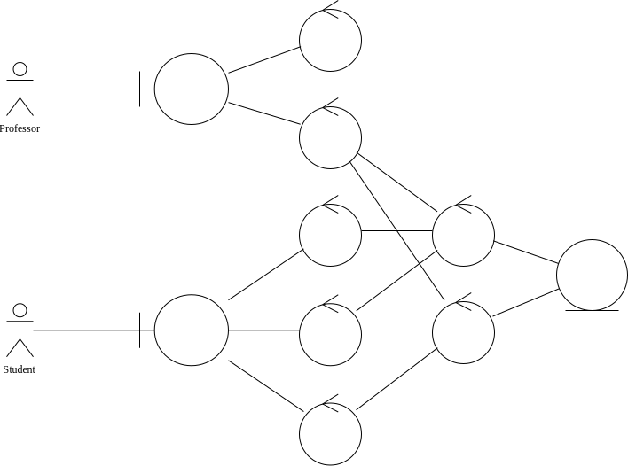
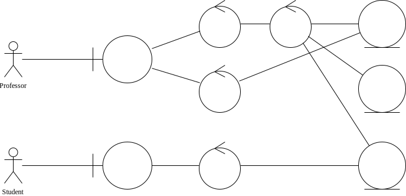

Project Guidelines
报告中英文都可以，内容总体按照软件工程的报告要求，主要内容包括：
- 概述，简要说明在 ××× 背景下，基于 ××× 技术或者架构，实现 ××× 系统，具备 ××× 功能，具有 ××× 意义；
- 需求分析，分析不同角色客户的不同需求；
- 系统架构及功能，此处按照 C4 的 4 层设计，以图表形式依次说明，一定既要有图还要有相应的解释或者说明；
- 测试；
- 运行结果展示及使用说明；
- 存在的问题及改进；
- 附录：相关领域或者类似项目的一些研究。
项目分析
Piggy-ProjG 是一个网络应用程序，它使教授可以在线发布多个项目，学生可以从中选择他们感兴趣的任何项目。
为了详细说明这一点，教授应该描述这些项目并决定每个项目和每个小组的最大学生人数。并且学生可以选择一个以上自己感兴趣的项目，并按照对这个项目感兴趣（或愿意做）的程度来安排。最后，系统应该将分组结果呈现给教授和学生。
该应用程序应该以网页的形式处理上述所有内容，这意味着用户应该可以通过任何现代浏览器访问该应用程序。
开发工具
该项目使用 Python 编程语言上的 Django 框架进行应用的开发。
Web 程序的特点
相较于传统应用，用户使用浏览器访问某一网站以使用 Web 应用，过程中通过 HTTP 请求完成数据的查询、修改。
应用程序本身不过是对数据访问、修改操作的封装与简化。传统的客户端程序通过调用图形库，在用户使用的操作系统上绘制出界面。如果是多用户同时使用、涉及到共享数据的场景，则可以将程序设计为访问远程的数据库。远程的数据库需要能够同时接受来自多个客户端的连接。
Web 程序通过 HTML 标记语言描述界面，借助浏览器显示出用以和用户进行信息交互的界面。用户本地并未运行程序本身，而是通过访问特定的 URL 完成数据的下载与上传。类似的，提供 Web 程序的服务器和数据库管理系统不一定运行在同一台机器上。
用例分析
简单的用例分析如下：

发布项目
教授在发布一个项目时，应填写项目名称和项目介绍，并设置项目要求的最高人数和组数、指定项目对小组能力的指标的偏好要求。
选择项目
学生在选择项目时，分为“分组”阶段与“选项目”阶段。
“分组”阶段介绍如下：
- “分组”阶段：学生可以首先进行自由组队，学生和教授都可以查看现有的分组情况。每个学生都可以选择创建新的小组、加入现有的小组，或者退出当前所在的小组；教授可以选择向小组中添加学生、或从小组中移除学生。当某组中唯一的成员选择退出小组或被移除时，该小组自动解散。每个小组有人数上限；
- 教授可以选择随时停止“分组”阶段，此时学生无法再进行小组的创建、加入或退出。不符合人数要求的小组（如有）将由教授进行手动调整。调整后的结果视为最终结果。
“选项目”阶段介绍如下：
- 教授确定好分组情况后，小组成员可以按照一定的优先级选择若干自己意向中的项目，称为“填写志愿”。每个成员都可以为小组“填写志愿”，新提交的“志愿”将覆盖旧有的“志愿”；
- 教授可以选择随时停止“选项目”阶段，此时小组无法再对“志愿”进行修改，同时，系统将会根据小组的某种评价指标和“志愿”优先级匹配项目；当某一小组的所有“志愿”均无法被满足时，则随机为其分配某一可选的项目。教授可以修改系统分配后的结果，也可以确定最终结果；该过程中，学生和教授随时都可以查看当前的项目分配情况。
账户管理
系统支持用户进行注册。用户可以注册成为“教授”或“学生”。学生可以通过教授提供的“邀请码”加入到教授的课程中。
登录时，用户选择登录身份——“教授”或“学生”。登录成功后，系统将展示对应的页面：
- 教授端：可以查看所教授的课程，以及课程下的各个项目以及分组情况；
- 学生端：可以查看所加入的课程，以及对应课程下可选的项目，以及对应课程中的分组情况。
模块协作
教授发布项目

学生组队

学生选择项目

参考链接
数据库设计
需求分析
信息管理：项目组队系统主要是完成对学生信息管理、教师信息管理、学生组队管理、项目分发管理、项目匹配管理等。
注册、登录：用户可以注册成为学生和教师，通过唯一的用户名来登录。没有教师或同学的用户名是相同的。
发布计划、项目：教师首先面向特定学生发布项目计划（一个项目计划中包括一批不同的项目），教师可对其发布的计划，以及计划中的所有项目进行增删改查等操作。
组队：学生首先按照一定要求进行组队，组队完成后以小组为单位进行项目志愿的填报，学生仅能对项目信息进行查询。
注：在数据库中存储时，学生、教师、项目以及队伍都具有有一个用于索引的 ID 号。
- 教师（Teacher）：教师编号、教师用户名、姓名、电话号码、电子邮箱、密码；
- 学生（Student）：学生编号、学生用户名、姓名、密码、成绩；
- 计划（Plan）：计划编号、计划名称、指导老师、包含项目；
- 项目（Project）：项目编号、项目名称、项目简介、项目的人数要求；
- 小组/小队（Team）：小组编号、小组名称、小组成员、所属项目组、选择的项目；
概念设计
在设计项目组对系统数据库时，依据对系统做出的数据和功能的需求分析，确定要存储的有关对象的信息和各个对象的基本属性信息，还需要确定这些对象之间的相互关系。设计出概念模型如下：

逻辑结构设计
逻辑结构设计是根据设计完成的概念模型，按照“实体和联系可以转换成关系”的转换规则，转换生成关系数据库管理系统支持的数据库表的数据结构。然后根据关系数据理论，对关系模式进行优化。根据以上设计的资产管理系统的概念模型和实际应用中的需要，为系统设计出的各数据表的数据结构和完整性约束条件如表所示。
- 教师（Teacher）：教师编号、教师用户名、姓名、电话号码、电子邮箱、密码；
- 学生（Student）：学生编号、学生用户名、姓名、密码、成绩；
- 计划（Plan）：计划编号、计划名称、指导老师、包含项目；
- 项目（Project）：项目编号、项目名称、项目简介、项目的人数要求；
- 小组/小队（Team）：小组编号、小组名称、小组成员、所属项目组、选择的项目；
由于小组志愿数量不定，因此单独设计一个表。
- 小组志愿（Team Wish）：小组编号、选择的项目、优先级
小组和学生是多对多的关系，因此建立“小组成员”表存储所属关系：
- 小组成员（Team Members）：小组编号、学生编号
数据定义
定义 Django 中可用的数据模型，即从 django.db.models.Model 类继承。
from django.db import models
教师
定义教师（Teacher）类
class Teacher(models.Model):
username = models.CharField(max_length=150)
password = models.CharField(max_length=128)
name = models.CharField(max_length=150)
email = models.CharField(max_length=150)
resume = models.CharField(max_length=150)
username：用户名password：密码name：教师姓名email：电子邮箱resume：教师简历
学生
定义学生（Student）类
class Student(models.Model):
username = models.CharField(max_length=150)
password = models.CharField(max_length=128)
name = models.CharField(max_length=150)
rank = models.IntegerField(default=0)
email = models.CharField(max_length=150)
resume = models.CharField(max_length=150)
username：用户名password：密码name：学生姓名rank：学生能力等级email：学生电子邮箱resume：学生简历
事实上可以使用一个用户（User）表记录教师和学生的公共属性，并用另外的表记录身份信息和附加信息。
项目计划
项目计划（Plan），也称项目组（Project Group）。项目组仅归属于一位教师。
当项目尚未“过期（expired）”时，学生才能在该项目下组队和选择项目。
class Plan(models.Model):
teacher = models.ForeignKey(Teacher, on_delete=models.CASCADE)
name = models.CharField(max_length=150)
is_expired = models.BooleanField(default=False)
description = models.CharField(max_length=500)
teacher：所属的教师（外键）；当教师被删除时，所有的计划也需要被删除，在 Django 中使用on_delete=models.CASCADE描述该字段is_expired：标记项目计划是否“过期”name：项目计划名称description：项目计划描述
项目
一个项目组下可以包含多个项目。每个项目仅能属于一个项目组。
class Project(models.Model):
project_group = models.ForeignKey(Plan, on_delete=models.CASCADE)
name = models.CharField(max_length=150)
description = models.CharField(max_length=500)
max_group_num = models.IntegerField(default=5)
max_team_member_num = models.IntegerField(default=5)
project_group：所属的项目计划（外键）；当项目计划被删除时，所有的项目也需要被删除，在 Django 中使用on_delete=models.CASCADE描述该字段name：项目名称description：项目描述
小组
小组（Group），也称队伍（Team）。一个项目计划下可以有多个小组。一个小组中可以有多个成员。
当项目被删除、或者所属的项目计划被删除时，小组也将被删除。
class Team(models.Model):
# plan to which this team belong
project_group = models.ForeignKey(Plan, on_delete=models.CASCADE)
name = models.CharField(max_length=150)
# assigned project
project = models.ForeignKey(Project, on_delete=models.CASCADE)
members = models.ManyToManyField(Student)
project_group：所属的项目计划（外键）；当项目计划被删除时，所有的小组也需要被删除，在 Django 中使用on_delete=models.CASCADE描述该字段name：小组名称project：小组所选项目（外键）members：小组中的学生成员（多对多字段，将被 Django 转化为连接表的形式）
小组志愿
class TeamWish(models.Model):
team = models.ForeignKey(Team, on_delete=models.CASCADE)
# wished project ...
project = models.ForeignKey(Project, on_delete=models.CASCADE)
# ... with priority
priority = models.IntegerField()
创建数据库的 SQL 语句此处略去。详情可查看 init.sql。
物理结构设计
索引
实际应用时，主要通过 ID 来区分各个用户、项目、项目计划等，因此为这些表上的 ID 列建立索引。
CREATE INDEX "project_project_group_id" ON "project" ("project_group_id");
CREATE INDEX "team_project_id" ON "team" ("project_id");
CREATE INDEX "team_project_group_id" ON "team" ("project_group_id");
CREATE UNIQUE INDEX "team_members_team_id_student_id_uniq"
ON "team_members" ("team_id", "student_id");
CREATE INDEX "team_members_team_id" ON "team_members" ("team_id");
CREATE INDEX "team_members_student_id" ON "team_members" ("student_id");
CREATE INDEX "teamwish_project_id" ON "teamwish" ("project_id");
CREATE INDEX "teamwish_team_id" ON "teamwish" ("team_id");
CREATE INDEX "plan_teacher_id" ON "plan" ("teacher_id");
触发器
需要设置触发器的地方为上述设计中标记为“级联删除”的外键字段。
但在 Django 中，其将数据库的中的数据为了 ORM 对象，需要级联删除的操作并非通过触发器实现，而是通过程序代码中的逻辑来进行。
角色
类似的，该程序中未在数据库管理系统（DBMS）中建立用户，而是通过判断当前使用程序的用户的身份，在程序逻辑上限制用户的访问。由于用户无法修改 Web 程序背后的逻辑，因此该法仍具有一定的安全性。
程序控制逻辑
Web 接口
用户和 Web 程序之间通过 HTTP 请求进行交互。程序为各种用户会使用到的功能，设计了对应的 URL 链接。
用户访问对应的 URL 时，运行程序的服务器将会解析对应的 URL，并执行对应的程序（在 Django 中称作 view）。服务器会返回对应的 HTTP 响应，一般情况下为一个 HTTP 页面，亦即用户所使用的应用界面。
项目计划相关
# plans, a.k.a. project groups
path('plans/', views.plans, name='plans'),
path('plan/add/', views.add_plan, name='add_plan'),
path('plan/<int:plan_id>/', views.plan_detail, name='plan_detail'),
path('plan/<int:plan_id>/create_team/', views.create_team, name='create_team'),
path('plan/<int:plan_id>/start/', views.start_plan, name='start_plan'),
path('plan/<int:plan_id>/stop/', views.stop_plan, name='stop_plan'),
path('plan/<int:plan_id>/edit/', views.edit_plan, name='edit_plan'),
path('plan/<int:plan_id>/del/', views.del_plan, name='del_plan'),
path('plan/<int:plan_id>/add_project/', views.add_project, name='add_project'),
path('plan/<int:plan_id>/kick/<int:team_id>/', views.kick_out_team, name='kick_out_team'),
| URL 模板 | URL 名称 | 说明 |
|---|---|---|
plans/ | plans | 查看所有计划 |
plan/add/ | add_plan | 添加一个计划（仅教师） |
plan/<int:plan_id>/ | plan_detail | 计划详情 |
plan/<int:plan_id>/create_team/ | create_team | 创建小组（仅学生） |
plan/<int:plan_id>/start/ | start_plan | 启动计划（仅教师） |
plan/<int:plan_id>/stop/ | stop_plan | 停止计划（仅教师） |
plan/<int:plan_id>/edit/ | edit_plan | 编辑计划（仅教师） |
plan/<int:plan_id>/del/ | del_plan | 删除计划（仅教师） |
plan/<int:plan_id>/add_project/ | add_project | 添加项目（仅教师） |
plan/<int:plan_id>/kick/<int:team_id>/ | kick_out_team | 移除计划中小组（仅教师） |
注：创建小组的同时，该学生亦加入该小组，因此要求该学生未参与同计划下的其他项目。
项目相关
path('projects/', views.projects, name='projects'),
path('projects/search/', views.search_projects, name='search_projects'),
path('project/<int:project_id>/', views.project_detail, name='project_detail'),
path('project/<int:project_id>/del/', views.del_project, name='del_project'),
path('project/<int:project_id>/edit/', views.edit_project, name='edit_project'),
| URL 模板 | URL 名称 | 说明 |
|---|---|---|
projects/ | projects | 查看所有项目 |
projects/search/ | search_projects | 搜索项目 |
project/<int:project_id>/ | project_detail | 项目详情页 |
project/<int:project_id>/del/ | del_project | 删除项目（仅教师） |
project/<int:project_id>/edit/ | edit_project | 编辑项目（仅教师） |
教师相关
path('teachers/', views.teachers, name='teachers'),
path('teacher/<int:teacher_id>/', views.teacher_detail, name='teacher_detail'),
| URL 模板 | URL 名称 | 说明 |
|---|---|---|
teachers/ | teachers | 所有教师 |
teacher/<int:teacher_id>/ | teacher_detail | 教师详情页 |
小组相关
path('team/<int:team_id>/', views.team_detail, name='team_detail'),
path('team/<int:team_id>/wish/', views.team_wish, name='team_wish'),
path('team/<int:team_id>/join/', views.join_team, name='join_team'),
path('team/<int:team_id>/quit/', views.quit_team, name='quit_team'),
| URL 模板 | URL 名称 | 说明 |
|---|---|---|
team/<int:team_id>/ | team_detail | 小组详情页 |
team/<int:team_id>/wish/ | team_wish | 小组志愿填写页（仅小组中成员） |
team/<int:team_id>/join/ | join_team | 加入小组（仅学生） |
team/<int:team_id>/quit/ | quit_team | 退出小组（仅小组中成员） |
注：加入计划下的小组中即视作该学生处于该计划下。某一小组中最后一名成员退出时，小组将自动删除。
注册与登录相关
path('login/', views.login, name='login'),
path('logout/', views.logout, name='logout'),
path('register/', views.register, name='register'),
| URL 模板 | URL 名称 | 说明 |
|---|---|---|
login/ | login | 用户登入 |
logout/ | logout | 用户登出 |
register/ | register | 用户注册 |
样式设计
使用基础 HTML 标签描述出来的界面不够直观，使用 Bootstrap 为界面应用样式。